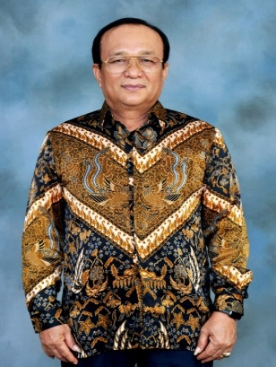

Partner Prof. Dr. M. S. Tumanggor, SH. M.Si. CTA.
Prior to joining, he dedicated decades to capital markets as high official at BAPEPAM RI, later BAPEPAM-LK, then OJK (Financial Services Authority). He is considered a "Grand Master" - pivotal in transformation, renewal and formulation of capital market regulations enabling companies to go public.
He authors scholarly works on capital markets and lectures at several universities in Indonesia.
We must rewrite his powerful and fundamental thought and argument: "Progress and prosperity of a nation and state can also be measured by advancement of its capital market in that country."
He authors scholarly works on capital markets and lectures at several universities in Indonesia.
We must rewrite his powerful and fundamental thought and argument: "Progress and prosperity of a nation and state can also be measured by advancement of its capital market in that country."